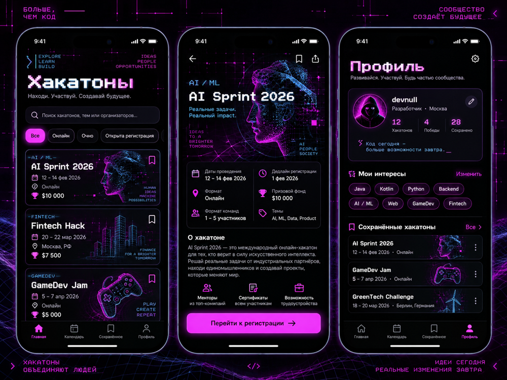

Утверждённое направление
Сохранены чёрные поверхности, фуксия/cyan, пиксельные заголовки, wireframe-арт, четыре вкладки и закреплённая CTA. Шрифты и иллюстрации подобраны заново; точного совпадения с исходными слоями нет. Даты и статистика следуют Starter.

iOS host подготовлен, но без Mac/Xcode не собран и не запущен. Это кандидат для визуального утверждения M1. Переход к M2 ожидает решения пользователя.